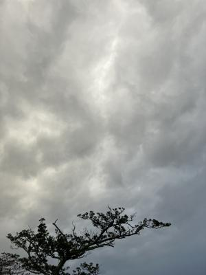
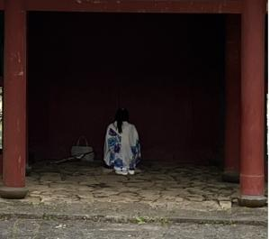
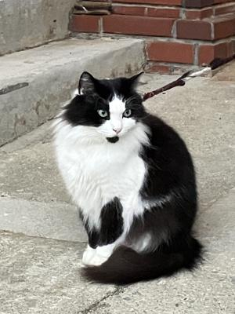

うるがいの話 ある日
最新: 御願（ウグヮン）【うるがいの話 ある日】とは 一日だけのプログです
『うるがいの話』の最新一日だけのプログで、通信料が少なく経済的だ。カニの画像をクリックすると全ての日付が載る『うるがいの話』サイトを表示します
|
|
【うるがいの話】 うるがい(ｳﾙｶﾞｲ urugai)とは、『もずくがに』の名前でとても大きくなります。 |
|---|---|
|
|
【カミマヤーの話】 猫のことを方言でマヤーといいます。カミマヤー（kamimayaa）とは、神の猫のことです。 |
|
【たながぁの音楽】 たながぁ（ﾀﾅｶﾞｰ tanagaa）とは手長えびのことで、何種類かあり大きいのは車 エビぐらいになります。 |

|
【ぶながぁの話】 ぶながぁ(ﾌﾞﾅｶﾞｰ bunagaa)とは、赤い髪の毛、赤い身体、そして身長は１ｍ２０ｃｍ ぐらい、川の蟹を食べているの目撃された。場所は沖縄県国頭郡大宜味村のと ある村僕の隣近所に住んでいる爺さんから、聞いた話です。 |
|
|
【ギーマの話】 ギーマ(giima)とは、山原の里山に咲くスズランに似た、 花を付けます。実は食べられます、 気が付くと口の周りが紫になっています。 |
2025年01月06日 (月）御願（ウグヮン）
14:57

円覚寺（えんかくじ）で、御願（ウグヮン）を行おうとするとすでに先
客がいた。着物を着た女性が、傘を置いて跪いている。しかたないと少
し距離をおいて立つと女性が振り向いた。３０歳から４０歳ごろか、私
を見た後すぐに前を向いた。私もいつものように、ウグヮンをする。

姉は、ユタに『サー高生まれ』と言われ、あちらこちらで御願（ウグヮ
ン）をした。姉は、すでにこの世の人ではないので私が、御願（ウグヮ
ン）をする。姉は、あの世で浜比嘉島あたりで修行を積んでいると義弟
のお母さん（故人）から、ユタが言っていたと伝えられた。
リードにつながれた高級そうな猫
